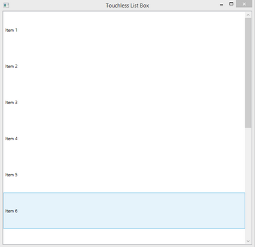

Sample: FF_TouchlessListBox.cs |
Top Previous Next |
|
The FF_TouchlessListBox.cs sample shows how to listen to the touchless controller module events in order to implement a simple UI. The sample presents a simple window with a basic table. You can use the following navigation gestures:
The sample can playback a recorded sequence. To do so, run the sample with the file name as the command line argument. You can record the sequence by using any hand tracking sample(s). The sample source is located under $(RSSDK_DIR)/framework/CSharp/FF_TouchlessListBox.cs.
|